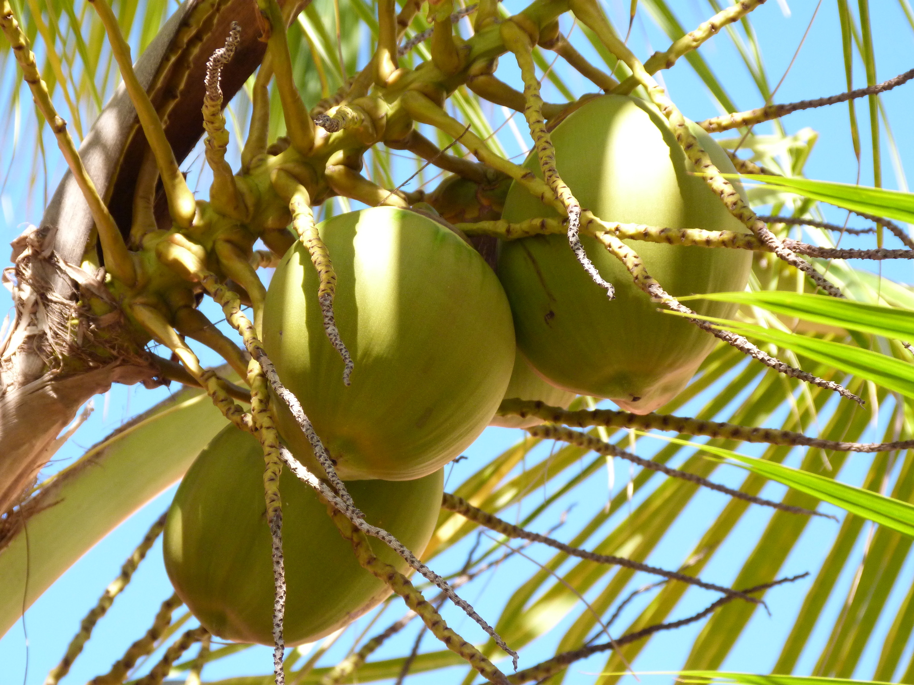
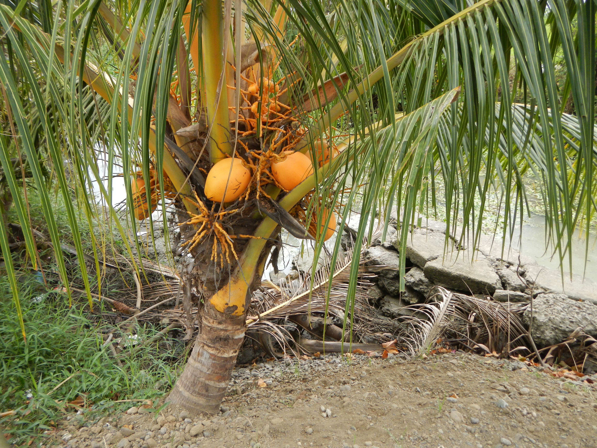
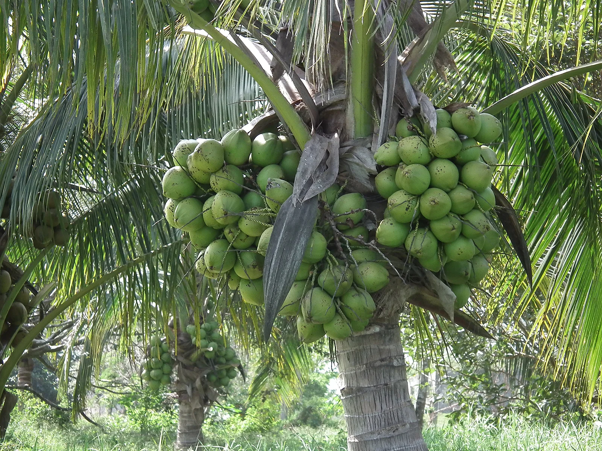

Esta fruta tropical es ampliamente valorada por su versatilidad culinaria y sus numerosas aplicaciones industriales. Su agua, pulpa y aceite son aprovechados globalmente en la elaboración de bebidas, postres y cosméticos.
La palmera de coco crece principalmente en zonas costeras de clima tropical. Su cáscara dura y fibrosa le permite flotar en el agua del mar durante meses, trasladándose entre islas sin perder la capacidad de germinar al llegar a una playa adecuada.
Además de ser altamente nutritivo y rico en minerales como el potasio y el magnesio, el coco provee fibras naturales resistentes que se utilizan para fabricar cuerdas, felpudos y sustratos agrícolas.
Variedades de Coco

Coco Gigante
Utilizado predominantemente para la producción de copra y aceite debido al alto rendimiento de su pulpa dura.

Coco Enano
Su cultivo se enfoca en el consumo de su refrescante agua gracias a la dulzura de su líquido interno.

Coco Híbrido
Una combinación que ofrece frutos de gran tamaño con un sabor dulce ideal tanto para beber como para comer.